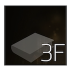
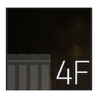

- 1F 매니저 웨더, 페니
주인공 페니와 매니저 웨더는 프론트에 근무하고 있으며 눈꺼풀 저울로 단골손님의 수면 상태를 체크합니다.
고가의 인기 상품인 베스트 셀러와 한정판, 예약 상품 꿈을 맡고 있는 만큼 아주 중요하고 신중해야 하는 역할이죠.
- 2F 매니저 비고 마이어스
비고 마이어스는 2층 매니저로 깔끔해서 다가가기 힘든 인상입니다. 이 세계에서는 손님의 꿈에 등장하면 안되는 규칙이 있는데 비고마이어스의 어린 시절 손님의 꿈에 직접 등장하여 대학교에서 제적을 당한적이 있죠.

- 3F 매니저 모그베리, 썸머
3층의 직원들은 획기적이고 액티비티한 꿈과 악몽을 판매합니다. 모그베리는 최연소 매니저로 요정들을 싫어하고 썸머는 성향 테스트 해주는것을 좋아하죠.

- 4F 매니저 스피도
스피도는 사람을 피곤하게 하는 스타일이지만 일처리 하나는 굉장히 빠릅니다. 휴가까지 계획적으로 사용하며 계획이 틀어지면 화를 내는 모습을 통해 완벽주의자라는걸 알 수 있죠.하지만 !그는 귀가 굉장히 얇아 다른 사람들의 말에 굉장히 잘 속아요.
- 5F 모테일
주인공의 고등학교 동창으로 1,2,3,4층에서 팔다 남은 유통기한 임박 상품을 세일해서 판매하거나 예약해놓고 가져가지 않은 꿈을 판매하는 역할을 하는 꿈 판매자입니다.